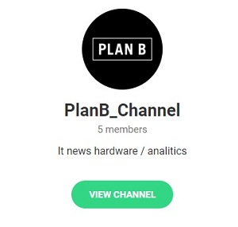
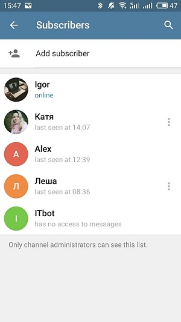
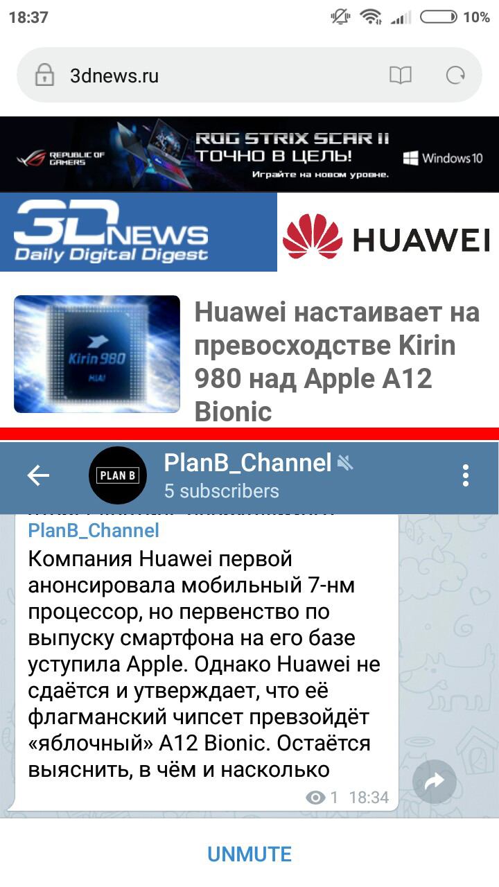

Боты в телеграме - довольно удобная вещь, они выполняют различные функции, автоматизируя ручной труд: поиск новостей в сети, онлайн-запись, поиск ответов на тематические вопросы и многое другое. Бот нашей команды выполняет 2 функции из перечисленных:
Рассылка IT-новостей
Выдача ответов на экзаменационные билеты


Бот синхронизирован с популярным сайтом 3dnews.ru Чтобы получать новостную рассылку с этого сайта в телеграм, необходимо подписаться на канал PlanB_Channel. Вам на смартфон будет приходить уведомление каждый раз, когда на сайте 3dnews появится новая статья. Прочитать данную статью можно напрямую на канале в телеграме.

Выдача ответов на экзаменационные билеты
Наш бот не только бездушно отправляет новости пользователям, но и дружелюбен к студентам. Написав боту IT_bot, вы можете с ним поздороваться, ответить на несколько вопросов и получить ответы на экзаменационные билеты, которые выпали нашей команде: 15, 20, 24, 25.